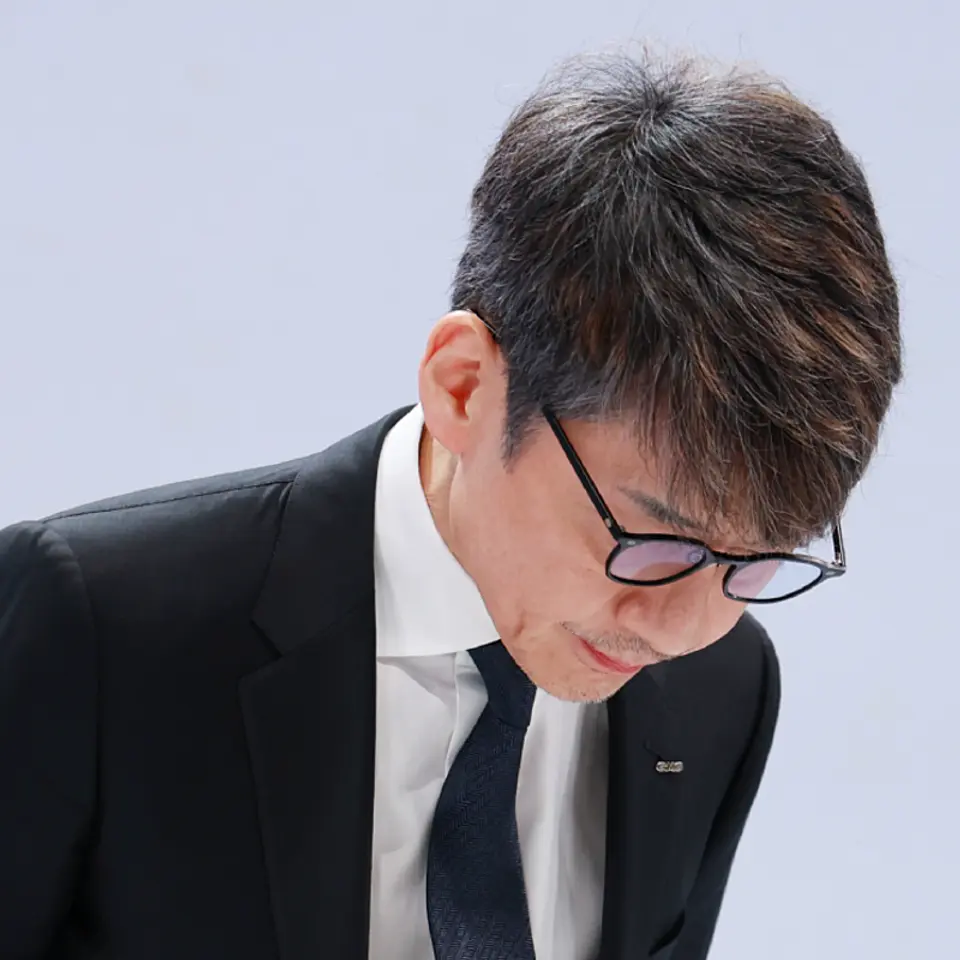
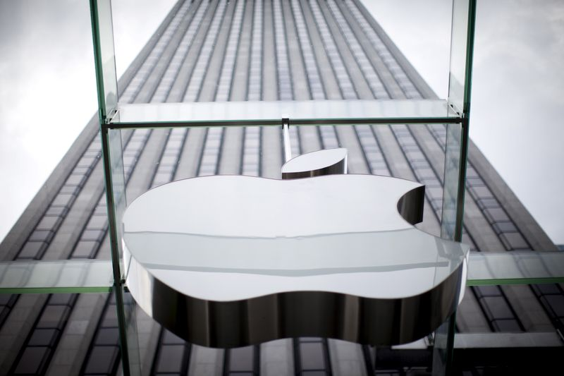
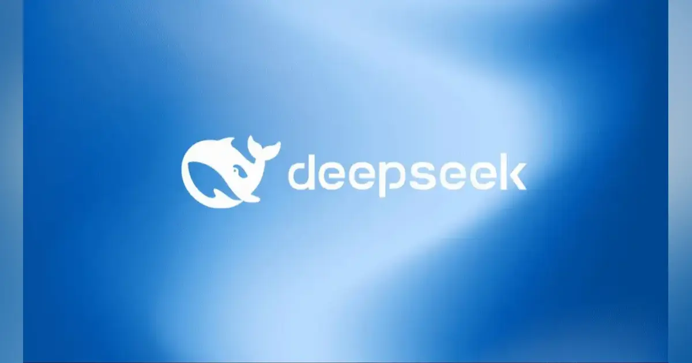

【要点まとめ】GMO不正アクセス会見「最大の教訓」はこれだ
発行日時：2026-11-03 05:30:03 JST
NewsPicks原文を読む

あなたに関係ありそうな理由
顧客情報を扱う業務では、対策を実施した報告だけで安心せず、誰が有効性を確かめるかまで決める必要があります。経営への報告と現場の対応をつなぐ事例です。
概要
GMOインターネットグループは11月2日、不正アクセス問題について約3時間半の会見を開いた。対象は「お名前.com デスクトップクラウド」で、最大2万6739台のサーバーが影響を受けた可能性がある。記事は、補償内容や経営陣の説明を整理したうえで、既に把握していた弱点への対応が被害を防げなかった理由を検討している。新しい攻撃手法だけでなく、対策の実行と確認を経営がどう管理したかが焦点だ。
説明された経緯では、攻撃者は8月5日に顧客サーバーへ入り、管理者権限を取得して管理サーバーにも侵入した。9月20日から10月14日にかけてマルウェアを配布し、10月20日の顧客からの問い合わせで発覚した。侵入から約2カ月半、検知できなかったことになる。顧客のパソコン内のファイルも盗まれた可能性があり、サービス提供側の問題が利用者の手元へ広がり得る事案だった。
同社は2024年4月、グループのセキュリティ企業イエラエから弱点を指摘されていた。5月20日までに緊急メンテナンスを4回行ったものの、対応の深さと速さは不十分だったという。報告は伊藤正社長と山下浩史副社長までで、熊谷正寿代表には届かなかった。山下氏は安定稼働を優先し、他の開発と並べた優先順位の判断や、対策が十分だと考えたリスク分析に誤りがあったと説明した。
利用者には一律5000円の見舞金と代替サービスの6カ月無償提供を示した。不正なFX操作による損失は全額補償する方針で、11月6日までに案内するとした。情報の公開が確認された場合には最大300万円の特別見舞金を設ける一方、二次被害の補償はまだ議論していない。役員4人が報酬を減額し、熊谷氏は3カ月間30％を減らす。金額だけでなく、何が補償対象となるかの続報を確かめたい。
筆者の伊藤健吾氏は、対策の効果検証、取締役会への報告基準、侵入検知という三つの途切れを指摘する。熊谷氏が述べたAI時代の脅威は重要な論点だが、今回の攻撃にAIが使われたと確認されたわけではない。表示コメントでも、対応済みと効果確認を別々に管理すべきだという意見があった。記事が示す教訓は、担当者へ対応を任せるだけで終えず、経営が実行と完了を確かめる仕組みを持つことだ。
仕事や会話で使える一言
対策済みという報告に、効果を確認した人と日付も添えてもらいたいですね。
【歴史的】インターネットは、巨大企業の私物になりました
発行日時：2026-11-03 05:30:00 JST
NewsPicks原文を読む
あなたに関係ありそうな理由
検索から読者や顧客を集める仕組みが、AIの回答画面によってどう変わるかを考える材料です。情報発信の閲覧数と、内容が利用される回数が一致しなくなる点が身近です。
概要
米掲示板サイトRedditの成長を支えてきた検索流入が、GoogleのAI検索によって揺らいでいる。記事によると、10月30日にRedditの時価総額は1日で29％減少した。7〜9月期の売上高は8億9500万ドルで、広告収入は前年同期から53％伸びていた。それでも市場が警戒したのは、足元の業績より、検索から来る利用者が減り続けるという今後の収益基盤の変化だった。
記事は、Google検索経由の訪問者が毎週100万人以上減り、年末までに1500万人を失うシナリオを紹介する。毎日平均1億3000万人以上が利用する規模でも、入口が細る影響は無視できない。ハフマンCEOは、GoogleのAIモードがRedditの投稿を取り込みながら、サイトへの訪問につながっていないと説明した。検索結果から元サイトへ移動して読む形が、検索画面で答えを得て終える形へ変わることが問題となる。
RedditはAI企業へデータを無償で渡しているわけではない。2024年2月にGoogleと年間6000万ドルの契約を結び、数カ月後にはOpenAIとも7000万ドルで契約したと記事は伝える。しかし、データ販売の比率は5％、広告は95％という構成だ。AIから得る対価があっても、人がサイトを訪れて広告を見る機会を失えば、中心事業の縮小を埋められるとは限らない。Redditはログインを求める仕組みも導入している。
一方で、Googleもすぐに利益を得ているとは言い切れない。記事は、親会社Alphabetが決算後に12％下落し、時価総額を5000億ドル失ったと伝える。AIモードは従来型の検索広告ほど収益化が進んでいないという。利用者に便利な回答を提供することと、検索サービスとして収益を確保することの両立は、情報を集める側にも課題を突きつけている。
筆者は、コンテンツを買い付ける資金を持つ巨大企業へ力が集まる可能性を論じる。ただし、これは記事の分析であり、ネットの将来が確定したという意味ではない。表示コメントには、検索が案内役から目的地へ変わるという見方のほか、AIの引用から質の高い訪問者が来る可能性を指摘する反論もあった。情報を発信する側には、閲覧数の変化に加え、誰が内容を利用し、その対価と顧客との接点がどこへ残るかを見直す論点が示されている。
仕事や会話で使える一言
AIに情報が使われることと、発信元へ人が来ることは同じではないですね。
アップル、年末商戦期の利益率低下見込む メモリーコスト増が圧迫
発行日時：2026-11-03 06:42:37 JST
NewsPicks原文を読む

あなたに関係ありそうな理由
売上が伸びても仕入れ価格やサービス運営費で利益が圧迫される事例です。端末購入やクラウドサービスの料金を考える際にも、原価上昇がどこへ転嫁されるかが関係します。
概要
アップルは11月2日に発表した決算で市場予想を上回る売上高を示した一方、年末商戦に当たる10〜12月期の利益率は低下すると見込んだ。ロイターによると、メモリーのコスト増が主な圧迫要因だ。7〜9月期の売上高は1144億8000万ドルで、予想の1133億9000万ドルを超えた。1株利益は2.10ドルとなり、税還付による0.05ドルを除いても予想の1.99ドルを上回った。
7〜9月期の粗利益率は47.9％だったが、10〜12月期は45〜46％の見通しである。財務責任者は、メモリーのコスト上昇が2027年も続くと予想した。過去に確保した在庫やメモリー以外の部品価格の低下、製品の値上げが一部を相殺しているものの、負担をすべて吸収できるわけではない。同社はiPhone 17を100ドル値上げし、一部のMacBookの価格も引き上げたと記事は伝える。
iPhoneの売上高は575億8000万ドルで、予想の565億4000万ドルを超えた。この四半期にはiPhone 18 Proが含まれるが、Duoは含まれない。ProとDuoは2026年、その他のモデルは2027年という発売の分散について、アナリストは売上を平準化する狙いとみる。Duoには画面のひびの報告があり、経営陣は返品はごくわずかで交換に対応していると説明した。増産を進めているが、需要と供給が釣り合う時期は予測できないという。
サービス部門にも費用の問題がある。10〜12月期の増収率見通しは8〜9％で、市場予想の10.7％を下回る。SiriのAIや高度な写真編集などをサーバーで処理する機能は運営費を伴い、一部に利用制限を設ける。iCloud+の値上げも計画しているが、新価格は示していない。端末を販売した後も、機能を使われるたびに必要となる計算資源の費用をどう負担するかが問われている。
購入契約額は四半期で330億ドル増えたが、経営陣はメモリーの長期契約の有無を明言していない。大きな購入額だけで将来の調達価格が固定されたとは判断できない。表示コメントでは、古い在庫の原価と次の仕入れ価格の違い、端末とクラウドAIのコスト配分に注目する意見があった。決算の好調さを見る際も、既に売れた製品の利益と、これから仕入れて提供する製品やサービスの採算をそれぞれ確かめたい。
仕事や会話で使える一言
好調な売上でも、次に仕入れる部品の価格まで見ないと利益は読めませんね。
ついに「池袋の逆襲」が始まったのか？ 西武池袋本店の集客が13ランク急上昇！ 売り場半減の百貨店に何が起きているのか――デパ地下から広がる意外な勝算とは
発行日時：2026-11-03 08:51:00 JST
NewsPicks原文を読む
あなたに関係ありそうな理由
商業施設の価値を床面積だけで測らず、駅からの動線や来店目的に注目する記事です。不動産や店舗の利用状況を見るとき、集客順位と収益を混同しない視点が役立ちます。
概要
売り場をほぼ半分に縮めた西武池袋本店が、首都圏の商業施設の集客ランキングで17位から4位へ上がった。Merkmalの記事は、面積縮小にもかかわらず利用者を引きつける理由を、食品売り場と駅からの動線に着目して考察する。根拠となる日経リサーチの調査は2026年9月中旬に行われ、10月23日に発表された。1都3県の約6万2000人を対象に、314施設について直近3カ月の利用経験を尋ねたものだ。
ここでいう順位は売上高でも利益でもない。来店経験を比べた指標であり、13順位の上昇をそのまま経営の回復と読むことはできない。表示コメントでも、前年には改装休業の影響があったという比較条件への注意が示された。利用が戻ったことと、客単価や来店頻度が伸びたことは異なる。記事も、順位だけでは客単価や収益性を把握できず、継続して観察する必要があると述べている。
西武池袋本店は2023年のフォートレスへの売却やヨドバシによる土地・建物取得を経て、2024年に改装を始めた。当初は2025年夏の全面開業を目指したが、2027年春の見通しとなり、段階的に売り場を開いている。食品売り場は2025年9月に再開した。食品と化粧品で約180店舗、弁当は400種類をそろえ、記事で紹介される利用目的では食品・惣菜が48％を占める。買い物の入口として食の存在感が大きい。
改札から段差なく入れる地下の動線も特徴だ。帰宅途中に夕食を調達したい人には、広い売り場を回ることより、短い移動で必要なものを買えることが価値になり得る。ただし、動線が順位上昇へどれほど寄与したかは確認されていない。記事は東京駅周辺の食品需要にも触れ、長距離移動の前後に買う人と、日々通勤する人では利用の場面が異なると指摘する。駅に近い施設でも、同じ商品構成が成功するとは限らない。
弁当の豊富さは選ぶ楽しさを生む一方、選択にかかる時間や在庫の負担も伴う。記事が挙げるモバイル注文は改善の提案で、導入済みの施策ではない。周辺で新施設が増えても街全体の需要が同じだけ増えるとは限らず、既存施設との顧客の奪い合いになる可能性もある。今回の変化を持続的な成果と判断するには、どんな目的の人が繰り返し来て、どれほど購入するのかまで追うことが必要になる。
仕事や会話で使える一言
順位が上がった理由を、売上だけでなく利用目的と比較時点から確かめたいですね。
DeepSeek、約2兆5300億円を調達か 評価額約15兆円、中国国有資本の出資比率27％に拡大
発行日時：2026-11-03 10:00:15 JST
NewsPicks原文を読む

あなたに関係ありそうな理由
AI企業の競争を、技術性能だけでなく資金調達と設備費用から把握できます。大きな数字を読むときに、調達額・企業評価額・出資割合の分母を確認する練習にもなります。
概要
中国のAI企業DeepSeekが、第2回の資金調達で1055億元、約2兆5300億円を集めたと報じられた。36Kr Japanが、米The Informationの関係者に基づく報道を紹介している。調達後の評価額は6155億元、約14兆8000億円とされる。金額は大きいが、同社が公式発表した確定情報ではない。記事の円換算は1元24円を用いており、企業の評価額と実際に新たに入る資金の額も異なる。
今回の調達には約30の企業・機関が参加したという。テンセントは前回と同額の100億元を出資したとされる。車載電池大手CATLと創業者の曽毓群氏を合わせた出資額も100億元で、前回の50億元から増えた。記事は半導体、スマートフォン、家電、自動車、旅行などの企業も挙げる。AI専業の投資家だけでなく、多様な事業を持つ企業が資金を出す構図が報じられている。
見出しにある国有資本の27％は、読み違えやすい数字だ。本文が説明しているのは、今回の調達総額に占める国有背景の投資家による出資割合であり、DeepSeekの全株式の27％を国有資本が保有するという意味ではない。前回は2％だったという。中国移動、中国電信、中金公司、中信証券、中国人寿保険などが、それぞれ20億〜80億元を出資したとされ、調達資金の構成が変わったことを示す。
同社は今年6月の初回調達で510億元を集めたと報じられている。今回の当初目標は500億元だったが、1000億元へ引き上げたという。背景として記事が挙げるのは、エヌビディア製チップの価格上昇と、手元資金を厚く確保する狙いだ。AIの開発を続けるには計算資源への支出が必要となる。調達額の拡大は成長への期待を表す一方で、開発環境を維持する費用の重さを映す面もある。
上場を巡っては、9月にロイターが中信証券を起用して上海の新興企業向け市場「科創板」への準備を進めていると報じた。ただし、時期や具体的な計画は公表されていない。表示コメントには資本構成やデータ管理、海外展開への懸念が見られるが、出資者の変化から経営方針や製品の扱いを断定することはできない。今後は調達内容の公式確認と、資金がどのような設備や開発へ向かうかが注目点になる。
仕事や会話で使える一言
27％という数字は、会社の持株比率なのか、今回の調達額の内訳なのかを確かめたいですね。